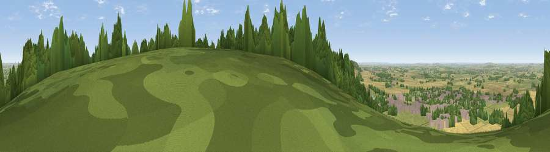

Viewpoint near Chinnor
#4803 in England · top 2% of its area beats it · near ChinnorThe view, rendered

A 360° render of this exact spot computed from the terrain model, tree cover and land cover — summer colours, afternoon light, calibrated against photographs of famous viewpoints. Real trees, hedges and buildings will differ in detail.
The panorama
Grey silhouette: terrain skyline in each direction (720 bearings, Earth curvature and refraction included). Dashed green: skyline with trees (+15 m) and buildings (+8 m) as obstacles. Blue strip: how far the ground is visible on each bearing.
Where the view opens
Wedge length = distance to the farthest visible ground on that bearing (vegetation-aware). Rings at 10, 25 and 50 km.
What fills the view
35% cropland · 32% grassland · 25% woodland · 7% built-up
Angular shares of the visible panorama (visual magnitude), not map area. Landscape diversity 0.56 (0–1 Shannon).
Key numbers
More beautiful places nearby
The staircase of upgrades: each row has a higher view potential than everything closer. Driving times are estimates from straight-line distance, calibrated against real road routing — check an actual route before setting out.
| Place | Direction | Drive | Score |
|---|---|---|---|
| Viewpoint near Chinnor | SSW · 0 km | ~1 min | 72.0 |
| Viewpoint near Chinnor | NE · 1 km | ~2 min | 74.5 |
| Coombe Hill Monument | NE · 11 km | ~20 min | 75.5 |
| Viewpoint near Woolstone | WSW · 49 km | ~69 min | 76.7 |
| Martinsell viewpoint | WSW · 69 km | ~92 min | 77.3 |
| Broadway Hill | WNW · 74 km | ~98 min | 77.7 |
| Viewpoint near Buriton | S · 80 km | ~104 min | 80.0 |
| Beacon Hill | S · 82 km | ~106 min | 85.8 |
51.69680, -0.89400 · source: screening · position refined by local search. Computed location — check access rights before visiting.